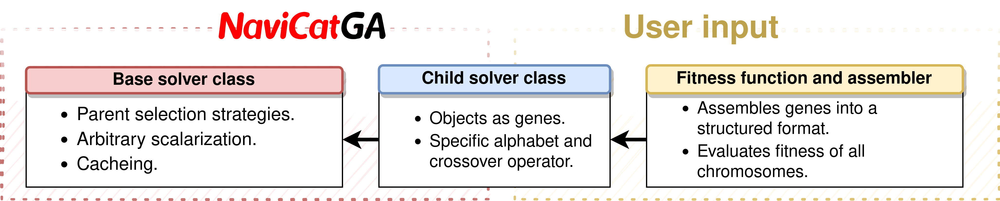

NaviCatGA: A flexible Genetic Algorithm Optimizer for the NaviCat project¶
Contents¶
About¶
The code runs on pure python and is thus not extremely optimized. However, it is easy to adapt for particular applications. Dependencies are minimal for the base class:
numpymatplotlib
The library is projected as base class containing the core methods, which are inherited by child classes to define the problem.
Several child solver classes are provided as fairly complete examples, but might need to be adapted or monkeypatched for particular applications.
The child classes and some functionalities have additional dependencies:
The selfies_solver class implementation requires
selfies(https://github.com/aspuru-guzik-group/selfies) andrdkit(https://www.rdkit.org/).rdkitmay be replaced manually by openbabel python bindings or other chemoinformatic modules.The smiles_solver class implementation requires
rdkit(https://www.rdkit.org/).rdkitmay be replaced manually by openbabel python bindings or other chemoinformatic modules.The xyz_solver class implementation requires
AaronTools(https://github.com/QChASM/AaronTools.py).Wrappers and chemistry modules contain functions that depend on
pyscfto solve the electronic structure problem. However, these are provided for exemplary purposes and not a core functionality.matter-chimera(https://github.com/aspuru-guzik-group/chimera) is recommended for scalarization. Alternatively, a scalarizer object with a scalarize method can be passed to the solver.
Additional features require alive-progress (for progress bars, very useful for CLI usage). However, these are implemented by monkeypatching the base class, and thus no functionality is lost without them.
Install¶
Installation is as simple as:
python setup.py install --record files.txt
This ensures easy uninstall. Just remove all files listed in files.txt using:
rm $(cat files.txt)
Documentation¶
The documentation is available here.
Examples¶
The tests subdirectory contains a copious amount of tests which double as examples.
Module contents:¶
navicatGA.base_solver module¶
- class navicatGA.base_solver.GenAlgSolver(n_genes: int, fitness_function=None, assembler=None, max_gen: int = 1000, max_conv: int = 100, pop_size: int = 100, mutation_rate: float = 0.15, selection_rate: float = 0.5, selection_strategy: str = 'roulette_wheel', excluded_genes: Optional[Sequence] = None, n_crossover_points: int = 1, random_state: Optional[int] = None, lru_cache: bool = False, scalarizer=None, prune_duplicates=False, verbose: bool = True, show_stats: bool = False, plot_results: bool = False, to_stdout: bool = True, to_file: bool = True, logger_file: str = 'output.log', logger_level: str = 'INFO', progress_bars: bool = False, problem_type: str = 'base')¶
Bases:
object- calculate_fitness(population)¶
Calculates the fitness of the population using the defined fitness function.
Parameters: :param population: population (array of chromosomes)
Returns: :return fitness: scalarized fitness of the current population, will be used :return pfitness: not-scalarized fitness of the current population, for printing
- check_input_base(fitness_function, selection_strategy, pop_size: int, excluded_genes)¶
Function to check that the main arguments have been passed to the GenAlgSolver instance.
Parameters: :param fitness_function: a fitness function that takes a chromosome and returns a fitness :param selection_strategy: a selection strategy string that can be recognized by this class :param pop_size: the number of chromosomes :param excluded_genes: a sequence of genes that should not change or mutate
- close_solve_logger()¶
Closes the logger of this solver. This avoid multiple loggers stacking when another solver is created.
- static create_offspring(first_parent, sec_parent, crossover_pt, offspring_number)¶
Creates an offspring from 2 parent chromosomes. It uses the crossover point(s) to determine how to perform the crossover. To be implemented on each child class. Must return the resulting offspring chromosome.
- get_boltzmann_probabilities(fitness)¶
Calculates selection probabilities according to a fitness Boltzmann distribution with an increasing temperature.
- get_crossover_points()¶
Retrieves random crossover points.
- get_number_mutations()¶
Returns the number of mutations that need to be performed.
- get_selection_probabilities()¶
Calculates selection probabilities either randomly or scaled by position.
- abstract initialize_population()¶
Initializes the population of the problem. To be implemented in each child class.
- interval_selection(value)¶
Select based on self.prob_intervals, which are given by the selection strategy.
Parameters: :param value: random value defining which individual is selected from the probability intervals
Returns: :return: the selected individual from the population
- mutate_population(population, n_mutations)¶
Mutates the population according to a given user defined rule. To be defined further in each child class. Each direct child class can call this super method to retrieve the mutation rows and mutations columns in population.
- static plot_fitness_results(mean_fitness, max_fitness, iterations: int)¶
Plots the evolution of the mean and max fitness of the population using matplotlib.
Parameters: :param mean_fitness: mean fitness array for each generation :param max_fitness: max fitness array for each generation :param iterations: total number of generations
- print_stats(time_str)¶
Prints the statistics of the optimization run.
- select_parents(fitness)¶
Selects the parents according to a given selection strategy. Options are: roulette_wheel: Selects individuals from mating pool giving higher probabilities to fitter individuals. two_by_two: Pairs fittest individuals two by two random: Selects individuals from mating pool randomly. tournament: Selects individuals by choosing groups of 3 candidate individuals and then selecting the fittest one from the 3.
Parameters: :param fitness: the fitness values of the whole population at a given iteration
Returns: :return (ma, pa): a tuple containing the selected 2 parents for each mating
- solve(niter=None)¶
Performs the genetic algorithm optimization according to the parameters loaded in __init__. Will run for max_gen or until it converges for max_conv iterations, or for min(niter,max_gen) iterations if niter is an integer. Will start using previous state if available.
Parameters: :param niter: the number of generations to run
- static sort_by_fitness(fitness, population, printable_fitness)¶
Sorts fitness, population and printable fitness according to fitness.
- tournament_selection(fitness, range_max)¶
Performs tournament selection.
Parameters: :param fitness: the fitness values of the population at a given iteration :param range_max: range of individuals that can be selected for the tournament
Returns: :return: the selected individuals
- static tournament_selection_helper(selected_individuals, fitness)¶
Helper for tournament selection method. Selects the fittest individual from a pool of candidate individuals.
navicatGA.cache module¶
- navicatGA.cache.calculate_fitness_cache(self, population)¶
Calculates the fitness of the population using a hashable fitness function.
Parameters: :param population: population state at a given iteration :return: the fitness of the current population
- navicatGA.cache.calculate_one_fitness_cache(hashable, fitness_function)¶
- navicatGA.cache.set_lru_cache(self)¶
Monkeypatches the calculate_fitness method of the base solver class in order to use a lru cache. If a specific wrapper exists for a given solver, it will try to use the unique expression of genes given by that wrapper to generate a hashable fitness function. If not, it will require a hashable fitness function given by the user AND expect the given fitness_function to generate a unique hash from a gene.
navicatGA.chemistry_selfies module¶
- navicatGA.chemistry_selfies.check_selfie_chars(chromosome)¶
Check if a list of selfies characters leads to a valid smiles string. Uses sanitize_smiles to check the smiles string from selfies.decoder.
Parameters: :param chromosome: list of selfie characters
Returns: :return: True if the smiles string is deemed valid by sanitize_smiles, False otherwise
- navicatGA.chemistry_selfies.count_selfie_chars(selfie)¶
Count the number of selfie characters in a selfie string. Returns the number.
- navicatGA.chemistry_selfies.decode_selfies_list(selfies_list)¶
Decode a list of smiles to a list of selfies using timed_decoder.
- navicatGA.chemistry_selfies.diagnose_mol(mol)¶
Tries to identify and print to logger whatever was or is wrong with the chemistry_selfies of an rdkit.mol object.
- navicatGA.chemistry_selfies.draw_selfies(selfies, root_name)¶
- navicatGA.chemistry_selfies.encode_smiles_list(smiles_list)¶
Encode a list of smiles to a list of selfies using selfies.encoder.
- navicatGA.chemistry_selfies.get_ECFP4(mol)¶
- navicatGA.chemistry_selfies.get_conformer_rmsd(mol)¶
- navicatGA.chemistry_selfies.get_confs_ff(mol, maxiters=250)¶
- navicatGA.chemistry_selfies.get_interatomic_distances(conf)¶
- navicatGA.chemistry_selfies.get_selfie_chars(selfie, maxchars=25)¶
Obtain an ordered list of all selfie characters in string selfie padded to maxchars with [nop]s.
Parameters: :param selfie: a selfie string representing a molecule :param maxchars: maximum number of elements in the list
Returns: :return chars_selfie: list of selfie characters present in molecule selfie
- navicatGA.chemistry_selfies.get_structure_ff(mol, n_confs=5)¶
Generates a reasonable set of 3D structures using forcefields for a given rdkit.mol object. It will try several 3D generation approaches in rdkit. It will try to sample several conformations and get the minima.
Parameters: :type mol: a rdkit.mol object :type n_confs: the number of conformations to sample
Returns: :return mol_structure: the same rdkit mol with 3D coordinates
- navicatGA.chemistry_selfies.has_transition_metals(mol)¶
Returns True if the rdkit.mol object passed as argument has a (transition)-metal atom, False if else.
- navicatGA.chemistry_selfies.is_transition_metal(at)¶
Returns True if the rdkit.Atom object passed as argument is a transition metal, False if else.
- navicatGA.chemistry_selfies.prune_mol_conformers(mol, energies_list)¶
- navicatGA.chemistry_selfies.randomize_selfies(selfies, num_random=1)¶
- navicatGA.chemistry_selfies.randomize_smiles(mol)¶
- navicatGA.chemistry_selfies.sanitize_multiple_smiles(smiles_list)¶
Calls sanitize_smiles for every item in a list.
Parameters: :param smiles_list list of smiles strings to be sanitized
Returns: :return sanitized_smiles: list of sanitized smile strings with None in errors
- navicatGA.chemistry_selfies.sanitize_smiles(smiles)¶
Return a canonical smile representation of smi. If there are metals, it will try to fix the bonds as dative.
Parameters: :param smi: smiles string to be sanitized :type smi: smiles string
Returns: :return mol: corresponding rdkit.mol object, None if exception caught :return smi_canon: canonicalized smile representation of smi, None if exception caught :return conversion_successful: True if no exception caught, False if exception caught
- navicatGA.chemistry_selfies.set_dative_bonds(mol, fromAtoms=(7, 8, 15, 16))¶
Tries to replace bonds with metal atoms by dative bonds, while keeping valence rules enforced. Adapted from G. Landrum.
- navicatGA.chemistry_selfies.timed_decoder(selfie)¶
Decode a selfies string to smiles using selfies.decoder, call exception and return None if decoder takes more than 10 seconds to run.
- navicatGA.chemistry_selfies.timed_sanitizer(smiles)¶
Convert smiles string to rdkit.mol, call exception and return None if it takes more than 10 seconds to run.
navicatGA.chemistry_smiles module¶
- navicatGA.chemistry_smiles.diagnose_mol(mol)¶
Tries to identify and print to logger whatever was or is wrong with the chemistry_selfies of an rdkit.mol object.
- navicatGA.chemistry_smiles.draw_smiles(smiles, root_name)¶
- navicatGA.chemistry_smiles.get_ECFP4(mol)¶
- navicatGA.chemistry_smiles.get_conformer_rmsd(mol)¶
- navicatGA.chemistry_smiles.get_confs_ff(mol, maxiters=250)¶
- navicatGA.chemistry_smiles.get_interatomic_distances(conf)¶
- navicatGA.chemistry_smiles.get_structure_ff(mol, n_confs=5)¶
Generates a reasonable set of 3D structures using forcefields for a given rdkit.mol object. It will try several 3D generation approaches in rdkit. It will try to sample several conformations and get the minima.
Parameters: :param mol: an rdkit mol object :type mol: rdkit.mol :param n_confs: number of conformations to sample :type n_confs: int
Returns: :return mol_structure: mol with 3D coordinate information set
- navicatGA.chemistry_smiles.has_transition_metals(mol)¶
Returns True if the rdkit.mol object passed as argument has a (transition)-metal atom, False if else.
- navicatGA.chemistry_smiles.is_transition_metal(at)¶
Returns True if the rdkit.Atom object passed as argument is a transition metal, False if else.
- navicatGA.chemistry_smiles.prune_mol_conformers(mol, energies_list)¶
- navicatGA.chemistry_smiles.randomize_smiles(mol)¶
- navicatGA.chemistry_smiles.sanitize_multiple_smiles(smiles_list)¶
Calls sanitize_smiles for every item in a list.
Parameters: :param smiles_list: list of smile strings to be sanitized.
Returns: :return sanitized_smiles: list of sanitized smile strings or None in case a smiles led to error
- navicatGA.chemistry_smiles.sanitize_smiles(smiles)¶
Return a canonical smile representation of smi. If there are metals, it will try to fix the bonds as dative.
Parameters: :param smi: smile string to be canonicalized :type smi: str
Returns: :return mol: rdkit mol object, None if exception caught :return smi_canon: canonicalized smile representation of smi, None if exception caught. :return conversion_successful: True if no exception caught, False if exception caught.
- navicatGA.chemistry_smiles.set_dative_bonds(mol, fromAtoms=(7, 8, 15, 16))¶
Tries to replace bonds with metal atoms by dative bonds, while keeping valence rules enforced. Adapted from G. Landrum.
- navicatGA.chemistry_smiles.timed_sanitizer(smiles)¶
Convert smiles string to rdkit.mol, call exception and return None if it takes more than 10 seconds to run.
navicatGA.chemistry_xyz module¶
- class navicatGA.chemistry_xyz.Hashable_Geometry(*args, **kw)¶
Bases:
AaronTools.geometry.GeometryThis is a modified version of the Geometry class in AaronTools.py, which is identical but hashable.
- navicatGA.chemistry_xyz.check_xyz(chromosome)¶
Check if a list of Geometries can lead to a valid structure.
- navicatGA.chemistry_xyz.draw_xyz(outname, geom)¶
- navicatGA.chemistry_xyz.get_alphabet_from_path(path='alphabet/')¶
- navicatGA.chemistry_xyz.get_default_alphabet()¶
- navicatGA.chemistry_xyz.get_starting_xyz_from_file(file_list)¶
- navicatGA.chemistry_xyz.get_starting_xyz_from_path(path='scaffolds')¶
- navicatGA.chemistry_xyz.get_starting_xyz_from_smi(smiles_list)¶
- navicatGA.chemistry_xyz.pad_xyz_list(xyz, maxchars)¶
Pads chromosome with empty elements.
- navicatGA.chemistry_xyz.random_merge_xyz()¶
Default chromosome manipulator: randomly generates an XYZ structure from fragments.
navicatGA.exception_messages module¶
navicatGA.exceptions module¶
- exception navicatGA.exceptions.InvalidInput(*args, **kwargs)¶
Bases:
Exception
- exception navicatGA.exceptions.NoAssembler(*args, **kwargs)¶
Bases:
Exception
- exception navicatGA.exceptions.NoFitnessFunction(*args, **kwargs)¶
Bases:
Exception
navicatGA.fitness_functions_float module¶
- navicatGA.fitness_functions_float.fitness_function_float(function_number)¶
navicatGA.fitness_functions_selfies module¶
navicatGA.fitness_functions_xyz module¶
navicatGA.float_solver module¶
navicatGA.helpers module¶
- navicatGA.helpers.check_error(func, *args, **kw)¶
- navicatGA.helpers.concatenate_list()¶
Default chromosome manipulator: concatenates all elements of a list.
- navicatGA.helpers.get_elapsed_time(start_time, end_time)¶
- navicatGA.helpers.get_input_dimensions(lst, n_dim=0)¶
- navicatGA.helpers.make_array()¶
Default chromosome manipulator: turns list into array.
navicatGA.logger module¶
- navicatGA.logger.addLoggingLevel(levelName, levelNum, methodName=None)¶
Adds a new logging level to the logging module and the currently configured logging class.
- navicatGA.logger.close_logger(logger)¶
- navicatGA.logger.configure_logger(logger_file='output.log', logger_level='INFO', to_stdout=True, to_file=True, libraries_level=None)¶
navicatGA.progress_bars module¶
- navicatGA.progress_bars.set_progress_bars(self)¶
- navicatGA.progress_bars.solve_progress(self, niter=None)¶
Performs the genetic algorithm optimization according to the parameters loaded in __init__. Will run for max_gen or until it converges for max_conv iterations, or for min(niter,max_gen) iterations if niter is an integer. Will start using previous state if available.
Parameters: :param niter: the number of generations to run
navicatGA.quantum_wrappers_selfies module¶
navicatGA.quantum_wrappers_xyz module¶
navicatGA.queue_wrappers_xyz module¶
navicatGA.score_modifiers module¶
- navicatGA.score_modifiers.AbsoluteModifier(score, target, parameter=1) → float¶
- navicatGA.score_modifiers.GaussianModifier(score, target, parameter=1) → float¶
- navicatGA.score_modifiers.SquaredModifier(score, target, parameter=1) → float¶
- navicatGA.score_modifiers.score_modifier(score, target, score_modifier_number=1, parameter=1) → float¶
navicatGA.selfies_solver module¶
- class navicatGA.selfies_solver.SelfiesGenAlgSolver(starting_selfies: list = ['[nop]'], starting_random: bool = False, starting_stoned: bool = False, alphabet_list: list = ['[#S]', '[S]', '[S-1expl]', '[Ring3]', '[Branch2_1]', '[Branch2_2]', '[P-1expl]', '[O+1expl]', '[=S+1expl]', '[Branch1_3]', '[=P]', '[C+1expl]', '[#O+1expl]', '[=C]', '[Branch2_3]', '[Expl=Ring3]', '[#S-1expl]', '[N+1expl]', '[Cl]', '[Hexpl]', '[O-1expl]', '[=N+1expl]', '[=S]', '[Branch1_1]', '[=S-1expl]', '[S+1expl]', '[=N]', '[O]', '[=P-1expl]', '[#C-1expl]', '[F]', '[N]', '[#S+1expl]', '[I]', '[=N-1expl]', '[Ring2]', '[C-1expl]', '[#C+1expl]', '[#P]', '[=C-1expl]', '[Expl=Ring2]', '[Expl=Ring1]', '[#C]', '[#P-1expl]', '[#N+1expl]', '[Branch3_1]', '[Branch3_3]', '[P]', '[#P+1expl]', '[N-1expl]', '[=P+1expl]', '[=O]', '[Branch1_2]', '[C]', '[P+1expl]', '[=O+1expl]', '[Ring1]', '[#N]', '[=C+1expl]', '[Branch3_2]', '[Br]'], chromosome_to_selfies=<function concatenate_list.<locals>.sc2str>, multi_alphabet: bool = False, equivalences: Optional[Sequence] = None, branching: bool = False, variables_limits: bool = False, max_counter: int = 10, n_genes: int = 1, fitness_function=None, max_gen: int = 500, max_conv: int = 100, pop_size: int = 100, mutation_rate: float = 0.05, selection_rate: float = 0.25, selection_strategy: str = 'tournament', excluded_genes: Optional[Sequence] = None, n_crossover_points: int = 1, random_state: Optional[int] = None, lru_cache: bool = False, scalarizer=None, prune_duplicates=False, verbose: bool = True, show_stats: bool = False, plot_results: bool = False, to_stdout: bool = True, to_file: bool = True, logger_file: str = 'output.log', logger_level: str = 'INFO', progress_bars: bool = False, problem_type='selfies')¶
Bases:
navicatGA.base_solver.GenAlgSolver- chromosomize(str_list)¶
Pad or truncate starting_population chromosome to build a population chromosome.
- create_offspring(first_parent, sec_parent, crossover_pt, offspring_number)¶
Creates an offspring from 2 parents.
- get_crossover_points()¶
Retrieves random crossover points :return: a numpy array with the crossover points
- initialize_population()¶
Initializes the population of the problem according to the population size and number of genes and according to the problem type (either integers or floats).
Returns: :return: a numpy array with initialized population
- mutate_population(population, n_mutations)¶
Mutates the population by randomizing specific positions of the population individuals. :param population: the population at a given iteration :param n_mutations: number of mutations to be performed. :return: the mutated population
- refill_population(nrefill=0)¶
- write_population(basename='chromosome')¶
Print xyz for all the population at the current state.
- navicatGA.selfies_solver.test_benzene_selfies()¶
navicatGA.smiles_solver module¶
- class navicatGA.smiles_solver.SmilesGenAlgSolver(starting_population: list = [['']], starting_random: bool = False, alphabet_list: list = ['C', 'N', 'P', 'O', '[Si]', 'F', '[H]'], chromosome_to_smiles=<function concatenate_list.<locals>.sc2str>, multi_alphabet: bool = False, equivalences: Optional[Sequence] = None, max_counter: int = 10, n_genes: int = 1, fitness_function=None, max_gen: int = 500, max_conv: int = 100, pop_size: int = 100, mutation_rate: float = 0.05, selection_rate: float = 0.25, selection_strategy: str = 'tournament', excluded_genes: Optional[Sequence] = None, n_crossover_points: int = 1, random_state: Optional[int] = None, lru_cache: bool = False, scalarizer=None, prune_duplicates=False, verbose: bool = True, show_stats: bool = False, plot_results: bool = False, to_stdout: bool = True, to_file: bool = True, logger_file: str = 'output.log', logger_level: str = 'INFO', progress_bars: bool = False, problem_type='smiles')¶
Bases:
navicatGA.base_solver.GenAlgSolver- chromosomize(str_list)¶
Pad or truncate starting_population chromosome to build a population chromosome.
- create_offspring(first_parent, sec_parent, crossover_pt, offspring_number)¶
Creates an offspring from 2 parents.
- get_crossover_points()¶
Retrieves random crossover points :return: a numpy array with the crossover points
- initialize_population()¶
Initializes the population of the problem according to the population size and number of genes and according to the problem type (either integers or floats).
Returns: :return: a numpy array with initialized population
- mutate_population(population, n_mutations)¶
Mutates the population by randomizing specific positions of the population individuals. :param population: the population at a given iteration :param n_mutations: number of mutations to be performed. :return: the mutated population
- refill_population(nrefill=0)¶
- write_population(basename='chromosome')¶
Print xyz for all the population at the current state.
navicatGA.timeout module¶
- navicatGA.timeout.handler(signum, frame)¶
- class navicatGA.timeout.timeout(seconds=10, error_message='Function call exceeded the time limit.')¶
Bases:
object- handle_timeout(signum, frame)¶
- navicatGA.timeout.timer_alarm(n_sec, handler)¶
navicatGA.wrappers_selfies module¶
- navicatGA.wrappers_selfies.mol_structure2cm(mol)¶
- navicatGA.wrappers_selfies.mol_structure2depictions(mol_structure, root_name='output')¶
Generate 2D and 3D depictions from an rdkit.mol object with 3D coordinates.
- navicatGA.wrappers_selfies.sc2cm(chromosome, order='C')¶
- navicatGA.wrappers_selfies.sc2depictions(chromosome, root_name='output', lot=0)¶
Generate 2D and 3D depictions from a list of selfies characters.
- navicatGA.wrappers_selfies.sc2ilogp(chromosome)¶
- navicatGA.wrappers_selfies.sc2krr(chromosome)¶
- navicatGA.wrappers_selfies.sc2levenshtein_to_target(chromosome, target_selfie)¶
- navicatGA.wrappers_selfies.sc2logp(chromosome)¶
- navicatGA.wrappers_selfies.sc2mol_structure(chromosome, lot=0)¶
Generates a rdkit.mol object with 3D coordinates from a list of selfies characters.
- navicatGA.wrappers_selfies.sc2mv(chromosome)¶
- navicatGA.wrappers_selfies.sc2mw(chromosome)¶
- navicatGA.wrappers_selfies.sc2mwilogp(chromosome)¶
- navicatGA.wrappers_selfies.sc2nmw(chromosome)¶
- navicatGA.wrappers_selfies.sc2selfies(chromosome)¶
Generate a selfies string from a list of selfies characters.
- navicatGA.wrappers_selfies.sc2smiles(chromosome)¶
Generate a canonical smiles string from a list of selfies characters.
- navicatGA.wrappers_selfies.sc2tanimoto_to_target(chromosome, target_selfie)¶
navicatGA.wrappers_smiles module¶
- navicatGA.wrappers_smiles.check_smiles_chars(chromosome)¶
Checks if a chromosome corresponds to a proper SMILES.
- navicatGA.wrappers_smiles.chromosome_to_smiles()¶
Wrapper function for simplicity.
- navicatGA.wrappers_smiles.mol_structure2cm(mol)¶
- navicatGA.wrappers_smiles.mol_structure2depictions(mol_structure, root_name='output')¶
Generate 2D and 3D depictions from an rdkit.mol object with 3D coordinates.
- navicatGA.wrappers_smiles.sc2cm(chromosome, order='C')¶
- navicatGA.wrappers_smiles.sc2depictions(chromosome, root_name='output', lot=0)¶
Generate 2D and 3D depictions from a chromosome.
- navicatGA.wrappers_smiles.sc2ilogp(chromosome)¶
- navicatGA.wrappers_smiles.sc2logp(chromosome)¶
- navicatGA.wrappers_smiles.sc2mol_structure(chromosome, lot=0)¶
Generates a rdkit.mol object with 3D coordinates from a list of selfies characters.
- navicatGA.wrappers_smiles.sc2mv(chromosome)¶
- navicatGA.wrappers_smiles.sc2mw(chromosome)¶
- navicatGA.wrappers_smiles.sc2mwilogp(chromosome)¶
- navicatGA.wrappers_smiles.sc2nmw(chromosome)¶
- navicatGA.wrappers_smiles.sc2smiles(chromosome)¶
Generate a SMILES string from a list of SMILES characters. To be customized.
- navicatGA.wrappers_smiles.smiles2mol_structure(smiles, lot=0)¶
Generates a rdkit.mol object with 3D coordinates from a SMILES.
navicatGA.wrappers_xyz module¶
- class navicatGA.wrappers_xyz.Hashable_Geometry(*args, **kw)¶
Bases:
AaronTools.geometry.GeometryThis is a modified version of the Geometry class in AaronTools.py, which is identical but hashable.
- navicatGA.wrappers_xyz.chromosome_to_xyz()¶
Wrapper function for simplicity.
- navicatGA.wrappers_xyz.geom2angle(geom, a1, a2, a3)¶
- navicatGA.wrappers_xyz.geom2bond(geom, a1, a2)¶
- navicatGA.wrappers_xyz.geom2dihedral(geom, a1, a2, a3, a4)¶
- navicatGA.wrappers_xyz.geom2sub_sterimol(geom, pos, parameter)¶
- navicatGA.wrappers_xyz.gl2geom(chromosome, h_positions='19-20')¶
Check if a chromosome (list of geometries) can lead to a valid structure.
navicatGA.xyz_solver module¶
- class navicatGA.xyz_solver.XYZGenAlgSolver(starting_population: list = [[None]], starting_random: bool = False, alphabet_list: list = [], chromosome_to_xyz=<function random_merge_xyz.<locals>.merge>, multi_alphabet: bool = False, equivalences: Optional[Sequence] = None, max_counter: int = 10, n_genes: int = 1, fitness_function=None, max_gen: int = 15, max_conv: int = 100, pop_size: int = 5, mutation_rate: float = 0.1, selection_rate: float = 0.25, selection_strategy: str = 'tournament', excluded_genes: Optional[Sequence] = None, n_crossover_points: int = 1, random_state: Optional[int] = None, lru_cache: bool = False, scalarizer=None, prune_duplicates=False, verbose: bool = True, show_stats: bool = False, plot_results: bool = False, to_stdout: bool = True, to_file: bool = True, logger_file: str = 'output.log', logger_level: str = 'INFO', progress_bars: bool = False, problem_type: str = 'xyz')¶
Bases:
navicatGA.base_solver.GenAlgSolver- chromosomize(str_list)¶
Pad or truncate starting_population chromosome to build a population chromosome.
- create_offspring(first_parent, sec_parent, crossover_pt, offspring_number)¶
Creates an offspring from 2 parents.
- get_crossover_points()¶
Retrieves random crossover points :return: a numpy array with the crossover points
- initialize_population()¶
Initializes the population of the problem according to the population size and number of genes and according to the problem type (XYZ fragments here). :return: a numpy array with a sanitized initialized population
- mutate_population(population, n_mutations)¶
Mutates the population by randomizing specific positions of the population individuals. :param population: the population at a given iteration :param n_mutations: number of mutations to be performed. :return: the mutated population
- refill_population(nrefill=0)¶
- write_population(basename='chromosome')¶
Print xyz for all the population at the current state.
Indices and tables¶
Contents:
- NaviCatGA: A flexible Genetic Algorithm Optimizer for the NaviCat project
- Module contents:
- navicatGA.base_solver module
- navicatGA.cache module
- navicatGA.chemistry_selfies module
- navicatGA.chemistry_smiles module
- navicatGA.chemistry_xyz module
- navicatGA.exception_messages module
- navicatGA.exceptions module
- navicatGA.fitness_functions_float module
- navicatGA.fitness_functions_selfies module
- navicatGA.fitness_functions_xyz module
- navicatGA.float_solver module
- navicatGA.helpers module
- navicatGA.logger module
- navicatGA.progress_bars module
- navicatGA.quantum_wrappers_selfies module
- navicatGA.quantum_wrappers_xyz module
- navicatGA.queue_wrappers_xyz module
- navicatGA.score_modifiers module
- navicatGA.selfies_solver module
- navicatGA.smiles_solver module
- navicatGA.timeout module
- navicatGA.wrappers_selfies module
- navicatGA.wrappers_smiles module
- navicatGA.wrappers_xyz module
- navicatGA.xyz_solver module
- Indices and tables